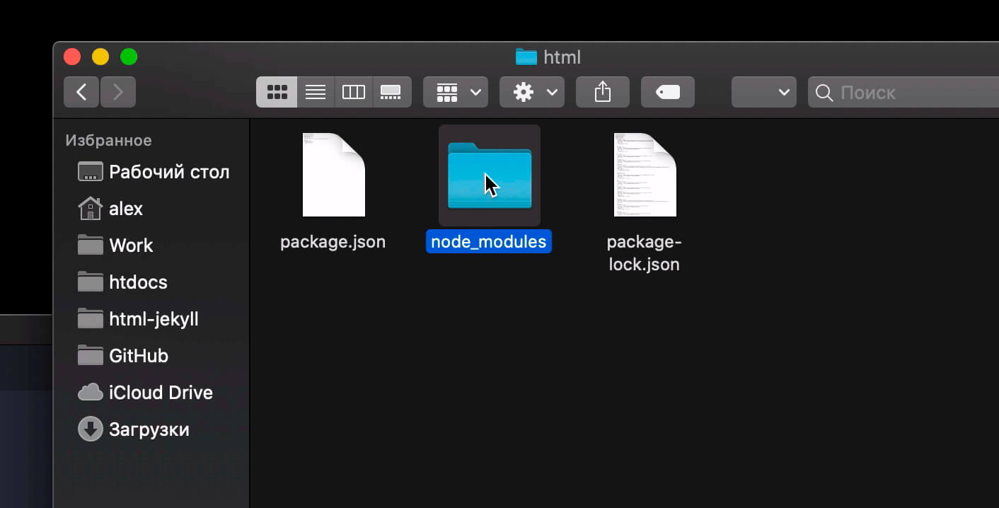
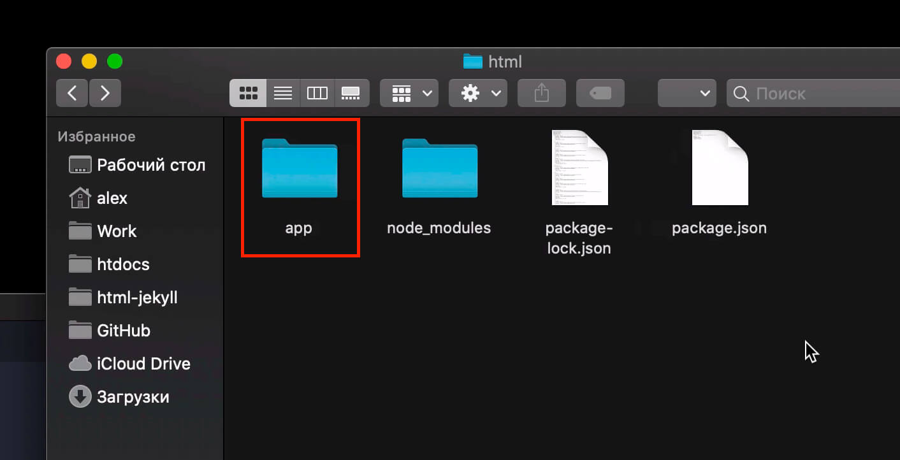
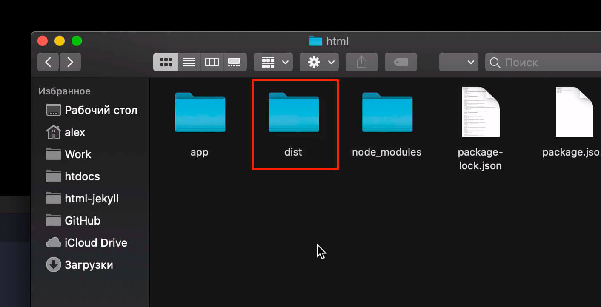

Подробный урок по Gulp, в котором мы детально разберем работу с Gulp, ознакомимся с новыми методами построения задач (тасков), вы узнаете, какими способами можно установить, настроить Gulp и как с его помощью автоматизировать и ускорить процесс веб-разработки. По традиции, мы будем знакомиться с возможностями инструмента на реальном примере и создадим удобное рабочее окружение для веб-разработки.

Для более углубленного понимания Gulp, в рамках подготовки данного урока, мною была полностью переведена документация Gulp, к которой мы будем возвращаться по мере обучения. Рекомендую ознакомиться с документацией, там вы найдете для себя много нового, полезного и интересного.
Полезные материалы урока:
- Документация Gulp
- Проект-пример данного урока на GitHub
- Установка рабочего окружения в Windows
- Node.js
- Browsersync Documentation
- Стартер OptimizedHTML 5 на основе Gulp
В данном руководстве мы рассмотрим Gulp именно в контексте автоматизации верстки - минификации, конкатенации, оптимизации изображений, шаблонизации и сборки. Поняв основы, вы сможете применять инструмент и в других областях. Gulp является крутым модульным инструментом, завоевавшим признание огромного количества пользователей в разных областях программирования, как лучший таск-раннер из всех ныне существующих. Gulp предоставляет лаконичный и простой синтаксис для построения любых задач.
С выходом новой версии Gulp инструмент претерпел значительные изменения, по сравнению с предыдущей версией, по которой я делал урок в свое время. Код стал максимально простым и лаконичным, значительно уменьшилось количество зависимостей пакетов, увеличилась скорость установки модулей и скорость работы в целом. Также у нас есть урок, в котором я рассказывал о том, как можно максимально быстро и без боли перевести любой проект, написанный с использование предыдущей версии. Сегодня-же мы научимся писать задачи с использованием только актуальных и рекомендуемых разработчиками Gulp методами и API. Данный урок будет актуальным до тех пор, пока в закрепленном комментарии к видео на YouTube не появится информация о том, что вышел новый урок по данному инструменту. Данное правило применимо и для других уроков на канале. Чекните актуальность, а заодно, можете поставить лайк и что-нибудь написать или спросить, буду рад ответить на ваш вопрос.
Gulp - это таск-раннер, инструмент, который позволяет автоматизировать любой ручной труд в любой области. Его используют не только в веб-разработке, но и в других областях, где требуется автоматизация рабочего процесса посредством построения задач - сборка, билд, копирование и другая работа с файлами и файловой системой.
Установка Gulp и настройка
Для начал необходимо установить окружение. Если вы пользователь macOS или Windows, вы можете загрузить Node.js версии LTS с сайта Nodejs.org или воспользоваться актуальным способом установки окружения, который я предлагаю для работы.
После установки окружения можно приступать к работе. Откроем терминал в папке проекта: создадим папку «html» на вашем компьютере и откроем в ней терминал.
Если вы пользователь Windows, для того, чтобы открыть терминал bash или командную строку в нужной папке, просто зажмите клавишу Shift и нажать правую кнопку мыши.
Внимание! Лучше не создавать русскоязычные папки. Избегайте кириллицы в путях вашего проекта, папка вашего пользователя должна быть написана также латиницей для корректной работы.
Выполним инициализацию проекта командой npm init и укажем название нашего проекта myproject:
Если у вас нет желания заполнять остальные поля, можно оставить их пустыми, нажимая «Enter» или заполнить на свое усмотрение. По окончании заполнения полей, введите yes и нажмите «Enter».
Проект создан. У нас появился файл «package.json». Это файл манифеста нашего нового проекта, который, помимо той информации, что мы указали в терминале, содержит также информацию о используемых в нашем проекте пакетах и их версиях. Если в дальнейшем нам необходимо будет заново установить все используемые в проекте пакеты, можно будет сделать это всего одной командой npm i. В проект будут автоматически установлены модули соответствующих версий.
Для начала установим Gulp локально в наш проект командой:
npm i gulp --save-devЕсли вы хотите, чтобы ваши зависимости были отражены в секцииdevDependenciesманифеста, нужно обязательно указывать ключ--save-dev.
Теперь в файле package.json, в секции devDependencies появился gulp и информация о его текущей версии. После установки других пакетов таким-же образом, информация о них также будет отражена в «package.json».
{
"name": "myproject",
"version": "1.0.0",
"description": "",
"main": "index.js",
"scripts": {
"test": "echo \"Error: no test specified\" && exit 1"
},
"author": "",
"license": "ISC",
"devDependencies": {
"gulp": "^4.0.2"
}
}
Кроме того, в папке нашего проекта появилась папка «node_modules», которая теперь содержит все зависимости пакета «gulp».
Именно в эту папку будут автоматически установлены все модули и зависимости, которые мы будем использовать в нашем проекте. Папок с зависимостями может быть очень много, не смотря на то, что пока что мы установили только один пакет. Все дополнительные модули необходимы для корректной работы основных пакетов.
В папке проекта таже можно заметить файл «package-lock.json». Это служебный файл, на который можно не обращать внимание. Его, конечно, можно удалить, однако после повторной установки модулей, он появится вновь.
Для файлов нашего проекта я предлагаю создать папку «app/», в которой будут храниться все исходные файлы.
Создадим папку «dist/», в которую будет выгружен готовый билд проекта. Если вы работаете с какой-либо CMS или фреймворком, папка «dist/» вам, в принципе и не нужна. В своих проектах я не делаю сборку, потому, что все, что нужно для посадки, как правило, уже собрано в папке «app/» и готово к дальнейшей работе. В стартере OptimizedHTML 5 мы не используем возможности билда проекта, в этом нет необходимости. В данном уроке сборка проекта, все-таки будет показана для наглядного примера, чтобы вы понимали как это происходит в других проектах. Итак, папка «app/» - это исходники, «dist/» - это готовый, собранный проект.
Давайте создадим самый главный файл проекта. Это, конечно-же, «gulpfile.js».
Работа с gulpfile.js
Внимание! Все куски кода с примерами будут объединены в один полноценный пример «gulpfile.js» со всеми комментариями в конце данного урока.
Для начала определим константы Gulp в «gulpfile.js»:
// Определяем константы Gulp
const { src, dest, parallel, series, watch } = require('gulp');
Именно с помощью require() мы подключаем модули из папки «node_modules» и присваиваем их переменной или, как в нашем случае, константам.
Установим Live Server, который позволит нам использовать возможности локального сервера и автоматически обновлять страницы при изменениях в файлах. Лучшее решение - Browsersync. Давайте его установим командой:
npm i browser-sync --save-devПодключим Browsersync в проект:
// Определяем константы Gulp
const { src, dest, parallel, series, watch } = require('gulp');
// Подключаем Browsersync
const browserSync = require('browser-sync').create();
Здесь необходимо указать .create() для создания нового подключения.
Далее напишем функцию, которая определит логику работы «Browsersync». В отличие от предыдущей версии, логика работы в комбайне сейчас не является таском. Это просто функция, которую можно экспортировать в таск или добавить в набор экспорта.
// Определяем логику работы Browsersync
function browsersync() {
browserSync.init({ // Инициализация Browsersync
server: { baseDir: 'app/' }, // Указываем папку сервера
notify: false, // Отключаем уведомления
online: true // Режим работы: true или false
})
}
Обратите внимание, что название функции не должно совпадать с названием переменной или константы, в которую мы подключаем пакет. Поэтмоу, в данном случае, название функции browsersync() будет содержать только строчные буквы.
При использовании какого-либо модуля, рекомендую всегда читать его документацию на официальном сайте или на сайта npmjs.org. Как правило, разницы большой нет, где смотреть инструкцию, однако лучше отдавать предпочтение оф. сайту, так как информация на сайте npmjs.org может обновляться не сразу или иметь не полные инструкции.
Если в терминале выполнить команду gulp browsersync, мы получим ошибку «Task never defined: browsersync», так как функция browsersync() - это не таск, готовый к запуску.
Для того, чтобы получить готовый к запуску таск, функцию или комбинацию функций необходимо экспортировать.
Допишем далее в gulpfile.js:
// Экспортируем функцию browsersync() как таск browsersync. Значение после знака = это имеющаяся функция.
exports.browsersync = browsersync;
Запускаем новый таск командой:
gulp browsersyncПосле запуска мы увидим в браузере белую страницу с надписью «Cannot GET /». Это говорит о том, что в папке проекта «app/» нет индексного файла.
Если мы создадим в папке «app/» индексный файл «index.html», напишем в него что-нибудь и сохраним файл, то, после обновления страницы, мы сможем узреть в браузере результат нашего творчества.
Параметрonlineотвечает за режим работы. Укажитеonline: false, если хотите работать без подключения к интернету.
Работа со скриптами
Создадим функцию scripts() до экспорта задач. Данная функция будет обрабатывать скрипты нашего проекта:
function scripts() {
return src([ // Берем файлы из источников
'node_modules/jquery/dist/jquery.min.js', // Пример подключения библиотеки
'app/js/app.js', // Пользовательские скрипты, использующие библиотеку, должны быть подключены в конце
])
.pipe(concat('app.min.js')) // Конкатенируем в один файл
.pipe(uglify()) // Сжимаем JavaScript
.pipe(dest('app/js/')) // Выгружаем готовый файл в папку назначения
.pipe(browserSync.stream()) // Триггерим Browsersync для обновления страницы
}
Для работы данной функции нам понадобятся модули «gulp-concat» и «gulp-uglify-es». Установим их в наш проект. Устанавливать несколько пакетов можно простым перечислением без каких-либо разделяющих символов одной командой:
npm i gulp-concat gulp-uglify-es --save-devИ подключим данные модули к проекту в верхней части «gulpfile.js»:
// Определяем константы Gulp
const { src, dest, parallel, series, watch } = require('gulp');
// Подключаем Browsersync
const browserSync = require('browser-sync').create();
// Подключаем gulp-concat
const concat = require('gulp-concat');
// Подключаем gulp-uglify-es
const uglify = require('gulp-uglify-es').default;
Создадим в папке «app/» новую папку «js/» и в ней уже создадим новый файл «app.js». Для примера можно разместить следующий код в файле «app.js»:
$(document).ready(function() {
// $('body').hide()
})
Давайте разберемся, что происходит в функции scripts() нашего «gulpfile.js». Я буду указывать соответствующую строку кода из примера выше и объяснять, что мы делаем.
- Строка 1: Создаем функцию
scripts() - Строка 2: Возвращаем через return и тут-же открываем источник посредством
srcдля объекта Vinyl. -
Строки 3 и 4: Перечисление нескольких файлов в качестве источника.
Внимание! В строке 3 мы подключаем jQuery из модулей. Его, соответственно, также нужно установить командой
npm i jquery --save-devИмейте ввиду, что подключение пользовательских скриптов, в которых могут быть использованы какие-либо JS библиотеки, нужно размещать после подключения библиотек в потоке, так как в процессе конкатенации файлы сливаются именно в той последовательности, в которой перечисляются пути до файлов в
src, а подключение API библиотеки должно предшествовать использованию. -
Строка 6: Конкатенация (слияние) содержимого перечисленных выше файлов в один виртуальный. Здесь мы должны указать название результирующего файла, в нашем случае это «app.min.js». Для удобства каждый новый вызов
.pipe()рекомендую писать с новой строки.Так как
concatне является частью Gulp, его можно установить дополнительно, как и другие дополнительные модули командойnpm i gulp-concat --save-devи подключить к проекту в верхней части «gulpfile.js» (мы это уже сделали выше). - Строка 7: Сжатие скриптов посредством модуля «gulp-uglify-es», который мы установили и подключили ранее, вместе с «gulp-concat». Обратите внимание, что данный модуль необходимо подключать с параметром
.defaultв конце:const uglify = require('gulp-uglify-es').default; - Строка 8: Выгрузка результирующего файла в указанную директорию посредством
dest(). - Строка 9: Вызываем Browsersync для перезагрузки страницы.
.stream()используется для инъекции в код, без hard reload, однако в данном случае произойдет именно перезагрузка страницы, так как Browsersync знает, что это лучший вариант для работы со скриптами. Если мы работаем со стилями, например, жесткая перезагрузка не обязательна и Browsersync просо подставит новый код в браузере, без перезагрузки страницы. Это мы рассмотрим далее в уроке.
Далее экспортируем функцию scripts() в таск. В нижней части «gulpfile.js», где у нас размещен предыдущий экспорт, добавляем экспорт таска scripts:
// Экспортируем функцию browsersync() как таск browsersync. Значение после знака = это имеющаяся функция.
exports.browsersync = browsersync;
// Экспортируем функцию scripts() в таск scripts
exports.scripts = scripts;
Поначалу может показаться, что система экспорта функций в таски не совсем удобна, ведь раньше, в Gulp версии 3, мы сразу писали таски, которые уже были готовы к использованию без экспорта. Но здесь фишка в том, что именно с помощью exports можно комбинировать любым способом любые функции. Это намного круче, намного удобнее и работает все намного быстрее. По мере изучения данного урока вы в этом убедитесь.
Запустим gulp scripts и проверим в терминале, как работает наш таск:
Таск работает отлично. Если перейти в папку «app/js/», можно узреть вновь созданный минифицированный файл «app.min.js» со скриптами проекта. Открыв этот файл, мы увидим, что там находится скрипт библиотеки jQuery, а в конце строки наш пример кода из «app/js/app.js».
Добавим разметку-пример в файл «app/index.html» с подключенным скриптом, стилями и изображением:
<!DOCTYPE html>
<html lang="en">
<head>
<meta charset="UTF-8">
<title>Document</title>
<!-- Подключаем стили проекта -->
<link rel="stylesheet" href="css/app.min.css">
</head>
<body>
<p>Далеко-далеко за словесными горами в стране, гласных и согласных...</p>
<!-- Подключаем оптимизированное изображение -->
<img src="images/dest/image.jpg" alt="Alt">
<!-- Подключаем скрипты проекта -->
<script src="js/app.min.js"></script>
</body>
</html>
Со стилями и изображениями поработаем чуть позже. Нужные ресурсы можно взять с GitHub, ссылка указана в начале статьи, в разделе полезных ресурсов урока.
Рекомендую держать файл «index.html» на виду, так как в дальнейшем мы к нему еще обратимся при работе со стилями и изображениями. Сейчас следует обратить внимание именно на строчку подключения скрипта:<script src="js/app.min.js"></script>.
Обратите внимание, что в путях до файлов скриптов, стилей и изображений мы не указываем папку «app/», так как эта папка является корнем для сервера и уже учтена в настройках Browsersync.
Давайте сделаем так, чтобы при сохранении скриптов, происходило автоматическое обновление страницы в браузере. Для этого создадим новую функцию startwatch(), которая запустит наблюдение за изменениями файлов. Данную функию позже мы добавим в дефолтный экспорт для запуска вотчинга при старте.
function startwatch() {
// Выбираем все файлы JS в проекте, а затем исключим с суффиксом .min.js
watch(['app/**/*.js', '!app/**/*.min.js'], scripts);
}
Использование константы watch, которую мы определили в начале документа, в качестве Gulp-функции, позволит нам выбрать нужные файлы для наблюдения - 'app/**/*.js', а затем отфильтровать те, которые заканчиваются на .min.js. В результате, для вотчинга у нас будут выбраны все файлы JS, кроме .min.js.
Для более глубокого понимания работы Globs рекомендую ознакомиться с соответствующим разделом документации Gulp.
Обратите внимание, друзья, что у нас может случиться рекурсивная перезагрузка страницы и рекурсивная (бесконечная) сборка файлов, если не установить негативный фильтр на файлы .min.js. Дело в том, что после сохранения файла «app.js» инициализируется сборка JS файлов, через определенное время создается собранный файл «app.min.js», который заново триггерит вотчер и все начинается заново. Именно поэтому есть замечательная возможность исключить нежелательные файлы из выборки, указав восклицательный знак «!» в начале строки Glob. Строка с восклицательным знаком должна следовать после того, как мы указали все JS файлы, так как она является фильтром для предыдущей строки Glob.
Для того, чтобы наша функция startwatch() заработала и начала выполнять полезную работу, ее необходимо добавить в дефолтный экспорт. Перейдем в секцию экспортов (в gulpfile.js внизу, где мы размещаем экспорты) и добавим дефолтный таск, в котором и запустим вотчер:
// Экспортируем функцию browsersync() как таск browsersync. Значение после знака = это имеющаяся функция.
exports.browsersync = browsersync;
// Экспортируем функцию scripts() в таск scripts
exports.scripts = scripts;
// Экспортируем дефолтный таск с нужным набором функций
exports.default = parallel(scripts, browsersync, startwatch);
Дефолтный таскexports.defaultпозволяет запускать проект одной командойgulpв терминале.
parallel()- параллельное выполнение всех перечисленных в скобках функций. В нашем случае, параллельно будут собраны скрипты (scripts), запущен сервер (browsersync) и запущен вотчер (startwatch).
Теперь можно запустить команду gulp в терминале. Если внести какие-либо изменения в файле «app/js/app.js», страница будет автоматически перезагружена.
Работа со стилями
Аналогичным образом можно поработать и со стилями. В папке «app/» создадим две папки - «sass» и «less». В папке «sass» создадим новый файл «main.sass», а в папке «less» создадим файл «main.less». Для примера их можно наполнить следующим содержимым:
// Содержимое файла main.sass
body
// display: none
display: grid
// Содержимое файла main.less
body {
display: none;
}
Ориентируясь на предыдущий опыт, установим одной командой модули «gulp-sass», «sass», «gulp-less», «gulp-autoprefixer» и «gulp-clean-css»:
npm i --save-dev gulp-sass sass gulp-less gulp-autoprefixer@8 gulp-clean-cssИ подключим их в проект:
// Определяем константы Gulp
const { src, dest, parallel, series, watch } = require('gulp');
// Подключаем Browsersync
const browserSync = require('browser-sync').create();
// Подключаем gulp-concat
const concat = require('gulp-concat');
// Подключаем gulp-uglify-es
const uglify = require('gulp-uglify-es').default;
// Подключаем модули gulp-sass и gulp-less
const sass = require('gulp-sass')(require('sass'));
const less = require('gulp-less');
// Подключаем Autoprefixer
const autoprefixer = require('gulp-autoprefixer');
// Подключаем модуль gulp-clean-css
const cleancss = require('gulp-clean-css');
Создадим переменную preprocessor в самом начале «gulpfile.js»:
// Определяем переменную "preprocessor"
let preprocessor = 'sass'; // Выбор препроцессора в проекте - sass или less
// Определяем константы Gulp
const { src, dest, parallel, series, watch } = require('gulp');
// ...
Теперь создадим функцию styles(), которая будет обрабатывать стили проекта, конкатенировать и сжимать. Обратите внимание, что мы используем наименование функции styles(), а не sass(), так как помимо Sass, у нас в проекте будет использоваться и Less. В качестве академического примера мы реализуем и такую возможность.
Давайте ознакомимся с полной функцией и будем разбираться, что здесь происходит:
function styles() {
return src('app/' + preprocessor + '/main.' + preprocessor + '') // Выбираем источник: "app/sass/main.sass" или "app/less/main.less"
.pipe(eval(preprocessor)()) // Преобразуем значение переменной "preprocessor" в функцию
.pipe(concat('app.min.css')) // Конкатенируем в файл app.min.js
.pipe(autoprefixer({ overrideBrowserslist: ['last 10 versions'], grid: true })) // Создадим префиксы с помощью Autoprefixer
.pipe(cleancss( { level: { 1: { specialComments: 0 } }/* , format: 'beautify' */ } )) // Минифицируем стили
.pipe(dest('app/css/')) // Выгрузим результат в папку "app/css/"
.pipe(browserSync.stream()) // Сделаем инъекцию в браузер
}
- Строка 2: Выбираем источники. Обратите внимание, что здесь используется переменная, которую мы определили в начале файла «gulpfile.js» -
preprocessor. В зависимости от значения этой переменной, мы будем брать либой файл «app/sass/main.sass», либо файл «app/less/main.less». Очень удобно, если нужно расширить возможности выбора источника, в зависимости от значения переменной. - Строка 3: С помощью функции
eval()преобразуем значение переменнойpreprocessorв наименование функции. Еслиpreprocessor = 'sass', будет работать функцияsass(), еслиpreprocessor = 'less', будет работать функцияless(). - Строка 4: Выгрузим содержимое в новый виртуальный файл с именем «app.min.css». Обратите внмиание, что «gulp-concat» можно использовать не только для того, чтобы собирать несколько файлов в один, но и для того, чтобы просто задать имя результирующего файла, как это происходит в данном случае.
-
Строка 5: Создание префиксов для лучшей совместимости со старыми браузерами. Здесь мы используем установленный и подключенный ранее модуль «gulp-autoprefixer».
Параметр
overrideBrowserslistзадается для определения глубины версий от текущей. В нашем случае, префиксы будут раздаваться старым браузерам последних 10-ти версий. Параметрgrid: trueотвечает за создание префиксов CSS Grid для браузеров Internet Explorer. - Строка 6: Форматирование или максимальное сжатие результирующего CSS файла. Параметр
level: { 1: { specialComments: 0 } }позволяет максимально сжать CSS код в одну строку. Также мы видим закомментированный параметрformat: 'beautify'. Если мы его раскомментируем, на выходе мы получим не максимально сжатый CSS код, а наоборот, развернутый и читаемый. - Строка 7: Выгружаем результирующий файл «app.min.css» в папку «app/css/».
- Строка 8: Триггерим Browsersync на инъекцию «app.min.css» в браузер. Обратите внимание, что перезагрузки страницы при сохранении исходных файлов препроцессора не происходит, новые CSS файлы просто подставляются вместо старых с помощью механизма Browsersync. Этого достаточно для того, чтобы новые стили были применены на странице.
Экспортируем функцию styles() в задачу. Для этого добавим перед дефолтным экспортом exports.styles:
// Экспортируем функцию browsersync() как таск browsersync. Значение после знака = это имеющаяся функция.
exports.browsersync = browsersync;
// Экспортируем функцию scripts() в таск scripts
exports.scripts = scripts;
// Экспортируем функцию styles() в таск styles
exports.styles = styles;
// Экспортируем дефолтный таск с нужным набором функций
exports.default = parallel(scripts, browsersync, startwatch);
После выполнения в терминале команды gulp styles будет создан файл стилей проекта «app/css/app.min.css». Если мы поменяем значение переменной preprocessor на less и перезапустим gulp в терминале, то в качестве источника выступит файл «app/less/main.less» и файл будет обработан уже препроцессором Less.
Далее, как вы уже догадались, нам необходимо настроить слежение за изменениями в исходных файлах препроцессора. Для этого создадим еще один watch() для стилей:
function startwatch() {
// Выбираем все файлы JS в проекте, а затем исключим с суффиксом .min.js
watch(['app/**/*.js', '!app/**/*.min.js'], scripts);
// Мониторим файлы препроцессора на изменения
watch('app/**/' + preprocessor + '/**/*', styles);
}
Здесь переменная preprocessor позволяет мониторить папку выбранного препроцессора - sass или less, в зависимости от значения. После запятой указывается функция (без скобок), которую необходимо вызвать в том случае, если файлы были изменены. В данном случае, мы вызываем функцию styles().
Все, что нам остается сделать, это добавить функцию styles() в дефолтный экспорт:
// ...
// Экспортируем дефолтный таск с нужным набором функций
exports.default = parallel(styles, scripts, browsersync, startwatch);
Теперь при запуске в терминале gulp, стили также будут мониториться и собираться автоматически. Так как в «index.html» мы изначально подключили стили и скрипты, все изменения будут применяться автоматически.
Внимательный читатель заметит, что мы обработали стили, обработали JavaScript, но абсолютно оставили без внимания HTML файлы. Давайте добавим наблюдение за HTML файлами проекта в функцию startwatch():
function startwatch() {
// Выбираем все файлы JS в проекте, а затем исключим с суффиксом .min.js
watch(['app/**/*.js', '!app/**/*.min.js'], scripts);
// Мониторим файлы препроцессора на изменения
watch('app/**/' + preprocessor + '/**/*', styles);
// Мониторим файлы HTML на изменения
watch('app/**/*.html').on('change', browserSync.reload);
}
Здесь мы отслеживаем событие посредством .on('change', ...) и выполняем hard reload страницы browserSync.reload.
Теперь, после перезапуска gulp, при сохранении HTML файлов страница будет автоматически обновляться.
Работа с изображениями
Следующая возможность, которую хотелось бы реализовать в нашем учебном проекте - это работа с изображениями. Для этого создадим папку для изображений «images» в папке «app». В ней создадим две папки - «src» (для исходников) и «dest» (для оптимизированных изображений). Скачайте любое изображение или несколько изображений из интернета в формате jpg или png и поместите их в папку источников «app/images/src/». Или вы можете взять изображение-пример с GitHub, ссылка есть в начале статьи.
Для того, чтобы работать с изображениями, нам необходим соответствующий модуль. Рекомендую использовать «compress-images». Это один из самых популярных модулей для работы с изображениями. Давайте установим «compress-images», а также вспомогательные модули:
npm i --save-dev compress-images gifsicle@5.3.0 pngquant-bin@6.0.0 gulp-cleanВнимание! В настоящее время для стабильной работы рекомендую устанавливать pngquant-bin версии 6.0.0 и gifsicle версии 5.3.0.
Подключим их к нашему проекту. В результате секция с подключением необходимых модулей будет выглядеть следующим образом:
// Определяем константы Gulp
const { src, dest, parallel, series, watch } = require('gulp');
// Подключаем Browsersync
const browserSync = require('browser-sync').create();
// Подключаем gulp-concat
const concat = require('gulp-concat');
// Подключаем gulp-uglify-es
const uglify = require('gulp-uglify-es').default;
// Подключаем модули gulp-sass и gulp-less
const sass = require('gulp-sass')(require('sass'));
const less = require('gulp-less');
// Подключаем Autoprefixer
const autoprefixer = require('gulp-autoprefixer');
// Подключаем модуль gulp-clean-css
const cleancss = require('gulp-clean-css');
// Подключаем compress-images для работы с изображениями
const imagecomp = require('compress-images');
// Подключаем модуль gulp-clean (вместо del)
const clean = require('gulp-clean');
Назначение вспомогательного модуля «gulp-clean» я объясню немного позже, а пока ознакомимся с новой функцией и разберемся, что здесь происходит. Добавим новую функцию images() после функции styles():
async function images() {
imagecomp(
"app/images/src/**/*", // Берём все изображения из папки источника
"app/images/dest/", // Выгружаем оптимизированные изображения в папку назначения
{ compress_force: false, statistic: true, autoupdate: true }, false, // Настраиваем основные параметры
{ jpg: { engine: "mozjpeg", command: ["-quality", "75"] } }, // Сжимаем и оптимизируем изображеня
{ png: { engine: "pngquant", command: ["--quality=75-100", "-o"] } },
{ svg: { engine: "svgo", command: "--multipass" } },
{ gif: { engine: "gifsicle", command: ["--colors", "64", "--use-col=web"] } },
function (err, completed) { // Обновляем страницу по завершению
if (completed === true) {
browserSync.reload()
}
}
)
}
- Строка 3: Выбираем все файлы из источника.
- Строка 4: Определяем папку назначения (выгрузки сжатых изображений).
- Строка 5: Основные опции модуля сжатия изображений.
- Строки 6-9: Сжатие различных типов файлов разными движками.
- Строка 10: По завершении обновляем страницу браузера.
Для того, чтобы новый таск заработал, функцию необходимо экспортировать. Добавим после exports.styles = styles; следующую строку:
// Экспорт функции images() в таск images
exports.images = images;
Кроме того при работе с изображениями иногда необходимо очистить всю папку «app/images/dest/» с готовыми картинками. Для этого отлично подойдет модуль gulp-clean. Напишем новую функцию после функции images() с наименованием cleanimg():
function cleanimg() {
return src('app/images/dest/', {allowEmpty: true}).pipe(clean()) // Удаляем папку "app/images/dest/"
}
Экспортируем для автономного использования в секции с экспортами в «gulpfile.js»:
// Экспортируем функцию cleanimg() как таск cleanimg
exports.cleanimg = cleanimg;
Проверить работу таска довольно просто, введем команду в консоли:
gulp cleanimgДалее можно добавить мониторинг изображений в вотчер. В результате функция startwatch() будет иметь следующий вид:
function startwatch() {
// Выбираем все файлы JS в проекте, а затем исключим с суффиксом .min.js
watch(['app/**/*.js', '!app/**/*.min.js'], scripts);
// Мониторим файлы препроцессора на изменения
watch('app/**/' + preprocessor + '/**/*', styles);
// Мониторим файлы HTML на изменения
watch('app/**/*.html').on('change', browserSync.reload);
// Мониторим папку-источник изображений и выполняем images(), если есть изменения
watch('app/images/src/**/*', images);
}
Можно запустить проект командой gulp и проверить, как все работает. Ознакомьтесь с файлом «index.html», чтобы разобраться, как мы подключили в этот файл стили, изображения и скрипты.
Сборка проекта (build)
И последнее, что хотелось бы сегодня реализовать - это сборка проекта или build. Создадим в корне проекта (рядом с папкой «app/») папку «dist/», в которую будем собирать наш проект. Обратите внимание, что у нас уже все собрано изначально (стили, скрипты, сжаты изображения) и build я покажу только для академического примера, в реально работе данным подходом я пользуюсь редко. Все, что нам нужно сделать - это собрать заново стили, скрипты, сжать изображения во избежании билда старой информации и скопировать нужные файлы в папку «dist/».
Добавим новую функцию buildcopy():
function buildcopy() {
return src([ // Выбираем нужные файлы
'app/css/**/*.min.css',
'app/js/**/*.min.js',
'app/images/dest/**/*',
'app/**/*.html',
], { base: 'app' }) // Параметр "base" сохраняет структуру проекта при копировании
.pipe(dest('dist')) // Выгружаем в папку с финальной сборкой
}
Обратите внимание, что мы выбираем здесь только минифицированные и готовые к продакшену файлы. Файлы нужно выбирать, исходя из задач и особенностей каждого отдельного проекта, это лишь простой и наглядный пример.
Данную функцию экспортировать не обязательно, так как она будет являться частью таска build и автономно использоваться не будет. Создадим таск build и выполним нужные функции последовательно друг за другом с помощью series():
// Создаем новый таск "build", который последовательно выполняет нужные операции
exports.build = series(styles, scripts, images, buildcopy);
Здесь мы используем последовательное выполнение функций, так как нам нужен строгий порядок при сборке проекта и параллельно выполнять никакие задачи не требуется.
Соберем наш проект, выполнив в терминале:
gulp buildДля очистки папки «dist/» можно создать дополнительную функцию cleandist() по аналогии с cleanimg() и добавить ее в таск build для предварительной очистки целевой папки:
function cleandist() {
return src('dist', {allowEmpty: true}).pipe(clean()) // Удаляем папку "dist/"
}
// Создаем новый таск "build", который последовательно выполняет нужные операции
exports.build = series(cleandist, styles, scripts, images, buildcopy);
Результат
В результате у нас получился такой замечательный «gulpfile.js», который мы создали на реальном примере простого окружения для верстки:
// Определяем переменную "preprocessor"
let preprocessor = 'sass';
// Определяем константы Gulp
const { src, dest, parallel, series, watch } = require('gulp');
// Подключаем Browsersync
const browserSync = require('browser-sync').create();
// Подключаем gulp-concat
const concat = require('gulp-concat');
// Подключаем gulp-uglify-es
const uglify = require('gulp-uglify-es').default;
// Подключаем модули gulp-sass и gulp-less
const sass = require('gulp-sass')(require('sass'));
const less = require('gulp-less');
// Подключаем Autoprefixer
const autoprefixer = require('gulp-autoprefixer');
// Подключаем модуль gulp-clean-css
const cleancss = require('gulp-clean-css');
// Подключаем compress-images для работы с изображениями
const imagecomp = require('compress-images');
// Подключаем модуль gulp-clean (вместо del)
const clean = require('gulp-clean');
// Определяем логику работы Browsersync
function browsersync() {
browserSync.init({ // Инициализация Browsersync
server: { baseDir: 'app/' }, // Указываем папку сервера
notify: false, // Отключаем уведомления
online: true // Режим работы: true или false
})
}
function scripts() {
return src([ // Берем файлы из источников
'node_modules/jquery/dist/jquery.min.js', // Пример подключения библиотеки
'app/js/app.js', // Пользовательские скрипты, использующие библиотеку, должны быть подключены в конце
])
.pipe(concat('app.min.js')) // Конкатенируем в один файл
.pipe(uglify()) // Сжимаем JavaScript
.pipe(dest('app/js/')) // Выгружаем готовый файл в папку назначения
.pipe(browserSync.stream()) // Триггерим Browsersync для обновления страницы
}
function styles() {
return src('app/' + preprocessor + '/main.' + preprocessor + '') // Выбираем источник: "app/sass/main.sass" или "app/less/main.less"
.pipe(eval(preprocessor)()) // Преобразуем значение переменной "preprocessor" в функцию
.pipe(concat('app.min.css')) // Конкатенируем в файл app.min.js
.pipe(autoprefixer({ overrideBrowserslist: ['last 10 versions'], grid: true })) // Создадим префиксы с помощью Autoprefixer
.pipe(cleancss( { level: { 1: { specialComments: 0 } }/* , format: 'beautify' */ } )) // Минифицируем стили
.pipe(dest('app/css/')) // Выгрузим результат в папку "app/css/"
.pipe(browserSync.stream()) // Сделаем инъекцию в браузер
}
async function images() {
imagecomp(
"app/images/src/**/*", // Берём все изображения из папки источника
"app/images/dest/", // Выгружаем оптимизированные изображения в папку назначения
{ compress_force: false, statistic: true, autoupdate: true }, false, // Настраиваем основные параметры
{ jpg: { engine: "mozjpeg", command: ["-quality", "75"] } }, // Сжимаем и оптимизируем изображеня
{ png: { engine: "pngquant", command: ["--quality=75-100", "-o"] } },
{ svg: { engine: "svgo", command: "--multipass" } },
{ gif: { engine: "gifsicle", command: ["--colors", "64", "--use-col=web"] } },
function (err, completed) { // Обновляем страницу по завершению
if (completed === true) {
browserSync.reload()
}
}
)
}
function cleanimg() {
return src('app/images/dest/', {allowEmpty: true}).pipe(clean()) // Удаляем папку "app/images/dest/"
}
function buildcopy() {
return src([ // Выбираем нужные файлы
'app/css/**/*.min.css',
'app/js/**/*.min.js',
'app/images/dest/**/*',
'app/**/*.html',
], { base: 'app' }) // Параметр "base" сохраняет структуру проекта при копировании
.pipe(dest('dist')) // Выгружаем в папку с финальной сборкой
}
function cleandist() {
return src('dist', {allowEmpty: true}).pipe(clean()) // Удаляем папку "dist/"
}
function startwatch() {
// Выбираем все файлы JS в проекте, а затем исключим с суффиксом .min.js
watch(['app/**/*.js', '!app/**/*.min.js'], scripts);
// Мониторим файлы препроцессора на изменения
watch('app/**/' + preprocessor + '/**/*', styles);
// Мониторим файлы HTML на изменения
watch('app/**/*.html').on('change', browserSync.reload);
// Мониторим папку-источник изображений и выполняем images(), если есть изменения
watch('app/images/src/**/*', images);
}
// Экспортируем функцию browsersync() как таск browsersync. Значение после знака = это имеющаяся функция.
exports.browsersync = browsersync;
// Экспортируем функцию scripts() в таск scripts
exports.scripts = scripts;
// Экспортируем функцию styles() в таск styles
exports.styles = styles;
// Экспорт функции images() в таск images
exports.images = images;
// Экспортируем функцию cleanimg() как таск cleanimg
exports.cleanimg = cleanimg;
// Создаем новый таск "build", который последовательно выполняет нужные операции
exports.build = series(cleandist, styles, scripts, images, buildcopy);
// Экспортируем дефолтный таск с нужным набором функций
exports.default = parallel(styles, scripts, browsersync, startwatch);